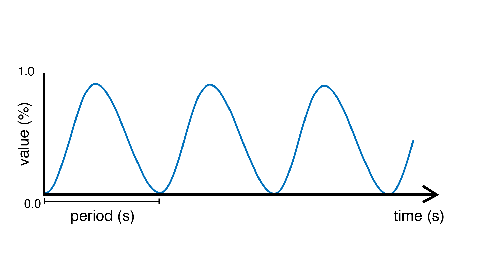

SineOsc
A source unit that can generate a sinusoid or sine wave. The signal is remapped to oscillate between 0 and 1 (rather than -1 and 1 as the traditional sine wave).
Example
Pulses an LED.
#include <Plaquette.h>
AnalogOut led(9);
SineOsc osc;
void begin() {
osc.frequency(5.0); // frequency of 5 Hz
}
void step() {
osc >> led;
}
-
class SineOsc : public Osc
Sine oscillator. Phase is expressed as % of period.
Public Functions
-
SineOsc(float period = 1.0f)
Constructor.
- Parameters
period – the period of oscillation (in seconds)
-
virtual Node &period(float period)
Sets the period (in seconds).
- Parameters
period – the period of oscillation (in seconds)
- Returns
the unit itself
-
virtual Node &frequency(float frequency)
Sets the frequency (in Hz).
- Parameters
frequency – the frequency of oscillation (in Hz)
- Returns
the unit itself
-
virtual Node &litude(float amplitude)
Sets the amplitude of the wave.
- Parameters
amplitude – a value in [0, 1] that determines the amplitude of the wave (centered at 0.5).
- Returns
the unit itself
-
virtual Node &phase(float phase)
Sets the phase (ie.
the offset, in % of period).
- Parameters
phase – the phase (in % of period)
- Returns
the unit itself
-
inline virtual float get()
Returns value in [0, 1].
-
SineOsc(float period = 1.0f)